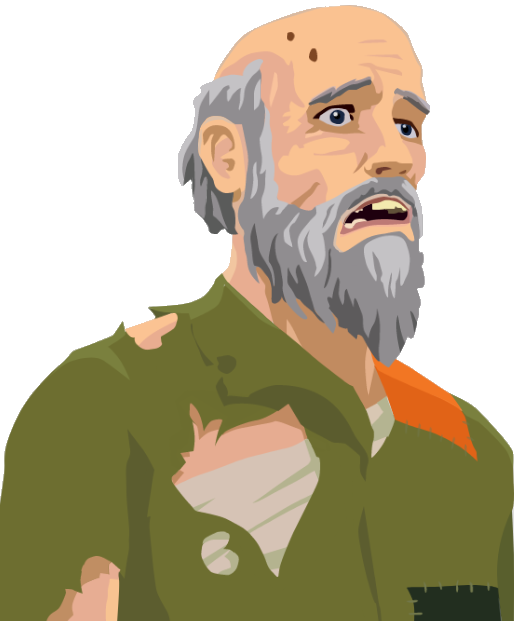

About Mr. Doesntbuystuff
Mr. Doesntbuystuff is just a guy who does not buy stuff. This is, because he is not a conformist and against the establishment. He also does not have money.
Mr. Doesntbuystuff being shocked in front of Deutsche Bank
Mr. Doesntbuystuff's Characteristics
- He ain't got money
- He ain't a capitalistic monster
- He is not giving in to society
Mr. Doesntbuystuff's friends
Mr.Doesntbuystuff is only befriended with those who freed themselves of the disease that is called money. Click on the links below to read more about them: